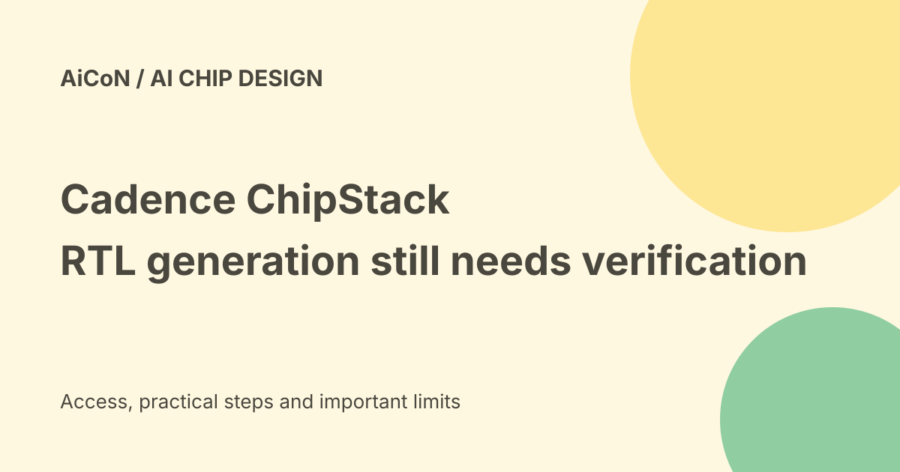

Cadence ChipStack: RTL agents, early access and verification limits
Cadence expanded ChipStack AI Super Agent with an RTL Generation Agent on 22 September 2026. The release says expanded capabilities are expected for selected early-access customers in the fourth quarter. An announcement is not proof of unrestricted public access.

What is ChipStack?
ChipStack is an AI system for front-end digital chip design and verification. Cadence describes specialized agents working with its electronic-design-automation tools.
EDA means electronic design automation: software used to design and check electronics. This is specialist engineering software, not a general chatbot for everyday tasks.
What is RTL?
RTL, or register-transfer level, describes digital logic and how information moves between storage elements. Engineers use it as an important stage before implementation in a chip.
Generating RTL is different from manufacturing silicon. A proposed design must pass the normal verification and implementation work before becoming a reliable physical product.
What the new agent adds
The September release describes generation from specifications, RTL analysis and refinement, and updates to existing RTL when requirements change.
It says the agent uses core EDA technology for power, performance and area optimization. These are intended capabilities; inspect the actual supported flow and access terms for your team.
What is PPA?
Power is energy use, performance is how fast the design meets its task, and area is the physical space used on the chip.
Optimizing one can affect another. A smaller design is not automatically better if it misses a timing requirement or breaks expected behaviour. Compare results against the same specification and constraints.
Vendor evaluation numbers
Cadence reports average area reduction of twenty-four percent and power reduction of eighteen percent versus pure foundation-model code generation in early evaluations. It also uses a one-hundred-percent-functionally-accurate claim for those evaluated results.
Those are vendor trial claims with a specific comparison. They do not guarantee those improvements or correctness on every new design. This guide did not inspect independent benchmark data.
Parallel agents and shared context
The product describes coordinated work across design and verification tasks. Shared design information can help agents work from the same intent and history.
That does not remove ambiguities in a specification. Engineers must define interfaces, expected behaviour and acceptance criteria rather than expecting a model to guess them correctly.
Availability is qualified
The release says expanded ChipStack and InnoStack capabilities are expected for selected early-access customers in the fourth quarter of 2026.
The current date falls within that quarter, but the wording still does not prove that every customer can enable the new agent today. Check the actual entitlement, version and support status with Cadence.
Price and India verdict
No general free plan, public exact licence price or Indian checkout total was established in the checked product and release pages.
This is enterprise EDA software for chip-design teams. An Indian team should verify the contract, required tool licences, deployment restrictions and support before planning a workflow.
Design data is sensitive
Specifications and RTL can contain confidential intellectual property. Check where models run, what data they receive, retention, access controls and any provider or export restrictions.
Do not upload a company's production design merely to try a demo. Use an approved test design and the minimum required permissions.
A useful evaluation path
- Confirm selected early-access eligibility and tool versions.
- Choose a small approved design with clear requirements.
- Record the baseline constraints and metrics.
- Inspect generated RTL and proposed changes.
- Run the team's normal verification flow.
- Compare PPA under matched conditions.
- Review corner cases and any unsupported features.
- Accept changes only through normal engineering approval.
No EDA installation, licence activation, chip design or model run was performed for this guide.
What changed since the original post?
We add the selected early-access qualification and attribute the new RTL/PPA figures to Cadence's trials. The guide separates agent-generated logic from a manufactured and validated chip.
Frequently asked questions
Is this a free general-user tool?
No such offer was verified.
Does the accuracy claim remove verification?
No. It describes vendor evaluations, not every future design.
Are all expanded features public now?
The release specifies expected selected early access.
Sources: Current ChipStack product overview · Official September RTL expansion and early-access release. Checked 7 October 2026.